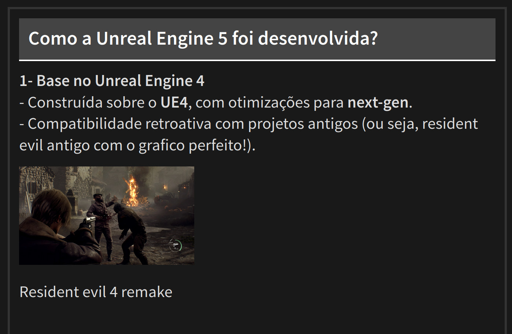

Criei um tema que vocês podem ver nesse link: TEMA, foi um processo divertido e cheio de etapas, no final disponibilizei o tema no open source do github, então se alguem tiver interesse em usar meu template sintam-se à vontade.

O Quarto permite a criação de apresentações usando Reveal.js, um framework poderoso para slides em HTML. O diferencial é que ele permite estilizar os slides com CSS, dando liberdade para personalizar fontes, cores, espaçamentos e muito mais. Isso significa que podemos criar apresentações únicas sem depender dos templates padrões.
Para modificar a aparência dos slides, criei um arquivo chamado custom.css e referenciei no YAML do meu arquivo .qmd:
format:
revealjs:
theme: custom.cssDentro do custom.css, adicionei algumas customizações essenciais:
/* Borda ao redor de toda a área do slide */
.reveal {
border: 5px solid #333; /* Borda externa ao redor do slide */
padding: 20px; /* Espaçamento interno para a borda não ficar colada */
margin: 0 auto; /* Centraliza os slides na tela */
box-sizing: border-box; /* Inclui a borda no cálculo do tamanho total */
}
/* Ajuste para o slide e conteúdo */
.reveal section {
font-size: 0.9em; /* Fonte pequena */
padding: 30px;
background-color: transparent;
color: #ddd;
border: none; /* Remove qualquer borda extra do conteúdo */
margin-top: 20px; /* Margem superior reduzida */
margin-left: 10px; /* Adicionando margem à esquerda */
}
/* Adicionando borda no slide (caixa de conteúdo) */
.reveal section {
border: 5px solid #333; /* Borda fina em cada slide */
margin: 10px;
padding: 20px;
}
/* Ajuste para o título (###) */
.reveal h3 {
font-size: 1.2em;
text-align: left;
padding: 20px;
background-color: #444;
color: white;
border-bottom: 3px solid #fff;
margin-top: 0;
margin-bottom: 20px;
}Com essas configurações, consegui um visual mais limpo e moderno para os meus slides. Claro, é possível ir muito além, adicionando imagens de fundo e até interações avançadas. Mas confesso que é bem mais dificil do que parece.
Criar um tema CSS personalizado para slides no Quarto foi uma experiência interessante e me permitiu deixar minhas apresentações mais alinhadas ao meu estilo. Se você também usa o Quarto para apresentações, recomendo experimentar a personalização via CSS. É simples e faz toda a diferença!